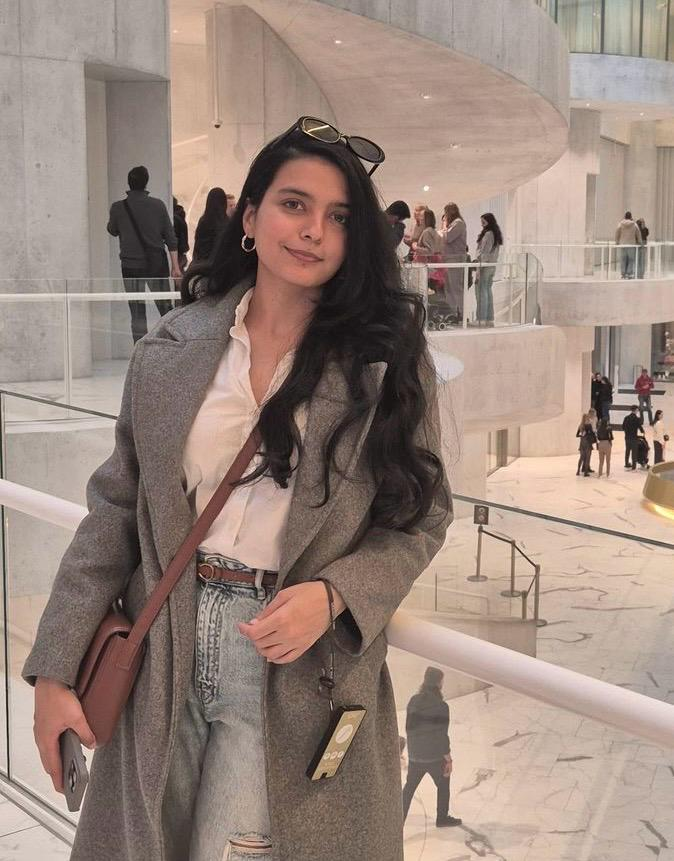

MSc Biomedical Engineering · University of Bologna
Thesis Research at ETH Zurich · Wearable Sensing · Machine Learning · Neurorehabilitation

Hi, I'm Muzna, a Biomedical Engineer with an MSc from the University of Bologna, Italy, with a major in Neuroscience. My thesis research was conducted at the Institute for Biomechanics, ETH Zurich, where I carried out a comparative analysis of gait parameter adjustments during obstacle negotiation across young adults, older adults, and individuals with Parkinson's Disease, examining the biomechanical signatures that distinguish fall risk across neurological populations.
I'm currently looking for PhD opportunities in rehabilitation research. What I care about is turning sensor-based movement data into tools that reach people directly: those recovering from injury, living with neurological conditions, or managing the effects of ageing. The work needs to matter outside the lab.
I work with multimodal wearable sensors (IMUs, EEG, motion capture) combined with machine learning and signal processing to extract digital biomarkers from movement data, track how the body adapts, and feed that back into personalised rehabilitation.
Feel free to reach out at syedamuzna313@gmail.com. I'm always happy to talk about research, collaboration, or PhD opportunities.
Designed and executed a comparative movement analysis across three populations (young adults, older controls, and individuals with Parkinson's Disease) across 100+ structured trials using VICON motion capture. Built a processing pipeline to extract gait parameters from raw 3D kinematic data, applied statistical modelling to compare groups, and identified maximum heel clearance as a discriminating digital indicator of fall risk in neurological populations. Conducted in direct collaboration with USZ Neurology Clinic and RELab.
Built and applied a biosignal processing pipeline for EEG data collected from 11 participants, including individuals with ADHD diagnoses. Implemented artifact rejection, bandpass filtering, and spectral feature extraction across a dual-device acquisition setup, producing clean time-series features as input for a machine learning-based diagnostic classifier. Contributed to a scalable ADHD detection tool under a government-funded clinical research initiative.
MSc Thesis · ETH Zurich Institute for Biomechanics · USZ Neurology Clinic
Investigated obstacle-crossing gait as a digital marker of fall risk in Parkinson's Disease, comparing 15 participants across three groups: young adults (mean age 26), age-matched older adults (mean age 67), and PD patients at Hoehn & Yahr stages II-III. Participants walked a continuous figure-eight loop over a physical obstacle while an 8-camera VICON system captured full-body kinematics at 100 Hz. The core contribution was a custom MATLAB pipeline that automatically detected the obstacle-crossing instant from raw kinematic data, replacing manual frame-by-frame video labeling, and segmented each trial into 7 gait phases (Pre-3 to Cross to Post-3) with a temporal accuracy of ≤15-20 ms (0-3 frames). PD patients showed lower Maximum Heel Clearance (347 ± 134 mm vs. ~421 mm in controls), shorter stride length (142 ± 23 cm vs. 166 cm), and wider step width (9.0 ± 1.6 cm vs. 7.6 cm). Critically, PD patients also showed markedly higher variability across all measures — most notably a 4-fold increase in Maximum Heel Clearance variability (CV ~38.6% vs. ~8.8% in controls) — reflecting impaired feedforward motor control and inconsistent trial-to-trial stepping. This combination of reduced clearance and high variability makes Maximum Heel Clearance the strongest discriminating digital biomarker of fall risk, since even occasional low-clearance steps are sufficient to trigger a trip.
Stack: MATLAB · VICON Nexus · Plug-in Gait protocol | Data: 15 participants · 3 groups · 100 Hz kinematic capture
U-Net CNN · BraTS 2020 · PyTorch
Trained a U-Net convolutional neural network from scratch in PyTorch to segment brain tumors pixel-by-pixel from raw MRI scans, then converted predicted masks into a physically meaningful tumor volume in mm³, validated against expert-drawn ground-truth annotations. Used FLAIR scans from 45 patients (BraTS 2020 dataset), split by patient into 36 training and 9 test patients. Preprocessing included z-score intensity normalization computed over brain tissue only, binary mask reduction from 3 sub-region labels, and selection of only tumor-containing slices, yielding 2,385 training slices and 602 test slices. The model achieved a Dice score of 0.7251 and mean IoU of 0.6332. For volume estimation across 9 test patients, the median error was 8.7%; the mean (55.1%) was distorted by a single outlier patient whose unusually bright normal tissue triggered false positives.
Stack: Python · PyTorch · nibabel · NumPy · Matplotlib | Data: BraTS 2020 · 45 patients · 2,385 training slices
Wearable Sensor Pipeline · Smartphone Accelerometer & Gyroscope
Built an end-to-end pipeline classifying 6 physical activities (walking, sitting, standing, lying, stairs) from raw accelerometer and gyroscope signals with no pre-computed features. Compared two approaches: (1) 72 hand-crafted time- and frequency-domain features (FFT spectral energy, zero-crossing rate, RMS) fed into Random Forest, SVM, and XGBoost; (2) an LSTM trained directly on raw signal windows. XGBoost achieved 91.25% accuracy; the LSTM matched it at 90.16%, 64× slower to train but requiring zero manual feature design, demonstrating raw sensor data contains sufficient structure for a model to self-discover.
Stack: Python · NumPy · scikit-learn · XGBoost · TensorFlow/Keras | Data: UCI HAR Dataset · 30 subjects · 10,299 windows
I'm actively looking for PhD opportunities in rehabilitation research and wearable sensing. If you're working in this space, I'd love to connect.